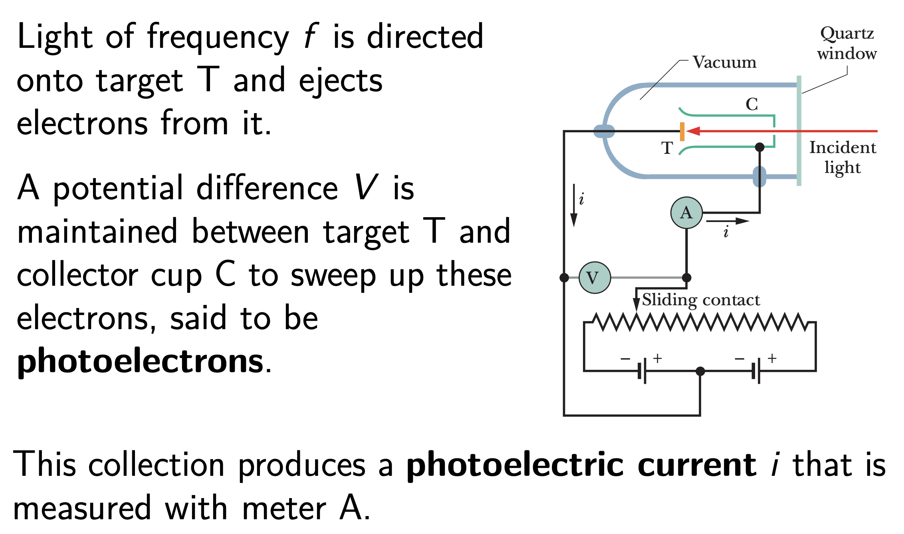
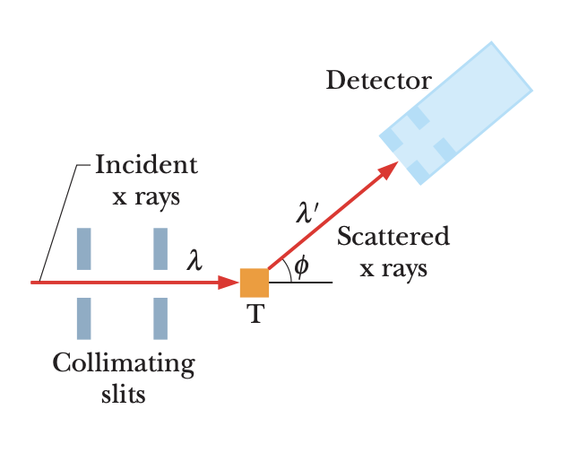
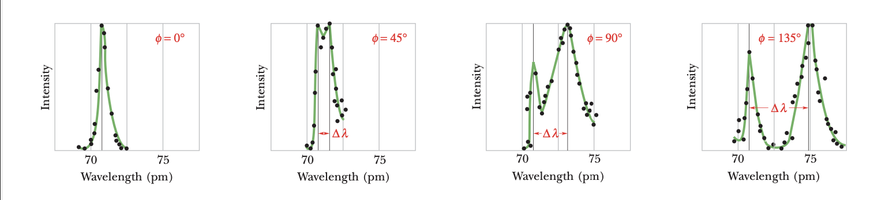
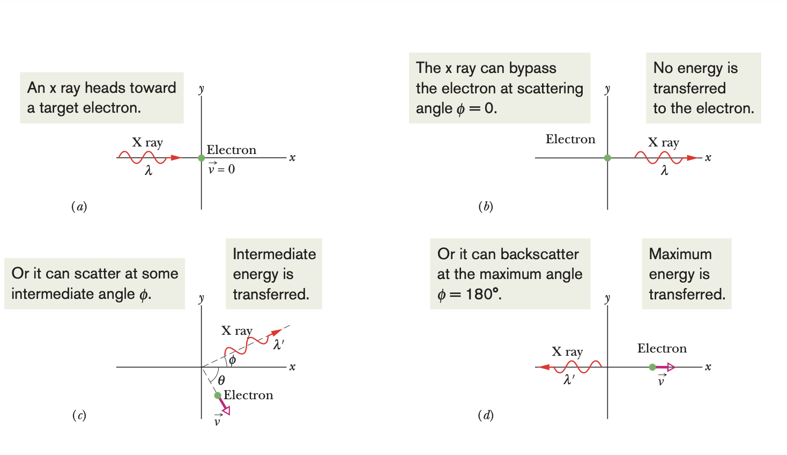
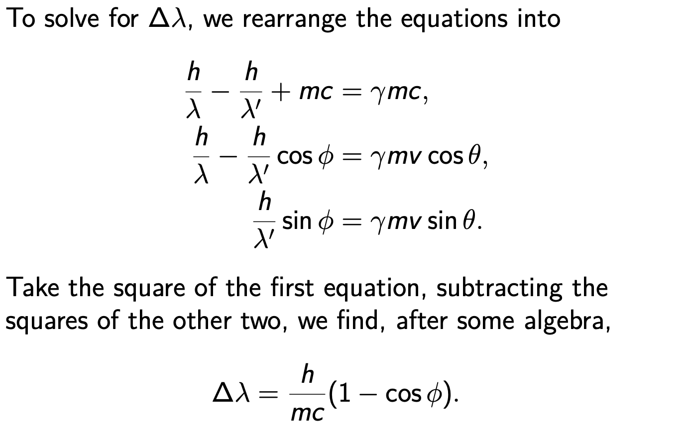
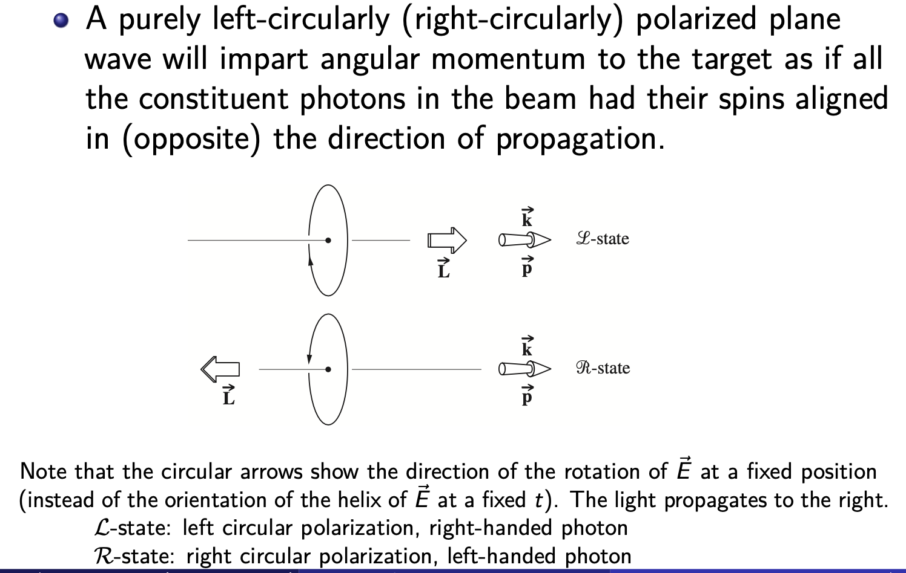
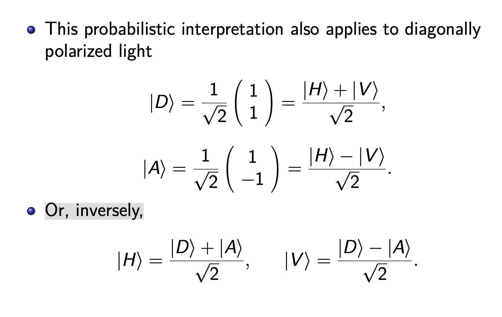
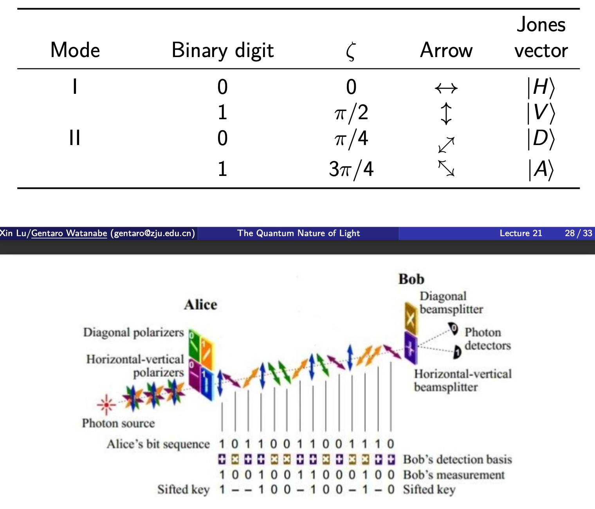

光的量子本性（The Quantum Nature of Light）¶
Overview
本讲涵盖光电效应、光子、康普顿散射、光子的角动量与偏振以及量子密钥分发。
光电效应¶

实验现象
实验表明，如果将足够短波长的光束照射到干净的金属表面上，光会从表面激发出电子。
我们调节电势差 \(V\)，使集电极 C 相对于靶 T 略微为负。
截止电势
在截止电势 \(V = V_{stop}\) 时，电流计 A 的读数刚好降为零。
此时最高能量的激发电子在刚好到达集电极之前被阻挡。
经典物理的困惑 1¶
实验事实
测量表明，对于给定频率的光，\(K_{max}\) 不依赖于光源的强度。
经典预期
在经典理论中，如果我们增加波的振幅及其振荡电场，电子应该获得更大的能量"踢"。
经典图像
- 入射光是正弦振荡的电磁波
- 靶中的电子应该由于波的电场对它的振荡电力而正弦振荡
- 如果电子的振荡振幅足够大，电子应该能够脱离靶表面——即从靶中激发出来
经典物理的困惑 2¶
实验事实
实验表明，如果频率低于某个截止值 \(f_0\)，无论入射光多强，光电效应都不会发生。
总结¶
经典观点
在经典理论中，光被视为电磁波。
人们预期无论频率多低，只要提供足够的能量——即使用足够亮的光源——电子总能被激发出来。
爱因斯坦的解释
爱因斯坦提出电磁辐射（或简称光）是量子化的，以我们现在称为光子的基本单位（量子）存在。
根据他的提议，频率为 \(f\) 的光波量子具有能量： \(\(E = hf = \hbar\omega\)\)
其中 \(h = 2\pi\hbar = 6.63 \times 10^{-34}\) J·s 是普朗克常数，\(\omega\) 是角频率。
频率为 \(f\) 的光波总能量必须是 \(hf\) 的整数倍，最小单位 \(hf\) 是单个光子的能量。
光的吸收与发射
爱因斯坦进一步提出，当光被物体（物质）吸收或发射时，吸收或发射事件发生在物体的原子中。
在吸收事件中，一个光子的能量 \(hf\) 从光转移到原子；光子消失，原子据说吸收了它。
对于由许多原子组成的物体，可以有许多光子吸收（如太阳镜）或光子发射（如灯泡）。
在经典物理中，这类事件涉及大量的光，我们不需要量子物理。
光子——光的量子¶
回到光电效应
靶中的电子被电力束缚。要刚好从靶中逃逸，电子必须获得某个最小能量 \(W\)，其中 \(W\) 是靶材料的功函数。
能量守恒
入射光能够转移给靶中电子的能量是单个光子的能量 \(hf\)。
根据能量守恒：\(hf = K + W\)
最大动能
在最有利的情况下，电子可以不损失任何动能地穿过表面逃逸： \(\(K_{max} = hf - W\)\)
解释困惑
-
困惑 #1 的解释：增加光强度增加的是光中的光子数量，而不是光子能量，所以转移给电子的能量不变。
-
困惑 #2 的解释：如果光子转移给电子的能量 \(hf\) 超过功函数（\(hf > W\)），电子可以逃逸。如果能量不超过功函数（\(hf < W\)），电子无法逃逸。
光子动量与康普顿散射¶
光子的性质
光子（或光量子）是具有能量 \(E = hf\) 的粒子。
它以光速 \(c\) 运动，但没有质量（\(m = 0\)）。
光子动量
1916 年，爱因斯坦扩展了他的光子概念，提出光量子具有线动量。
根据相对论，\(E^2 - c^2p^2 = m^2c^4 = 0\)
光子动量的大小为： \(\(p = \frac{hf}{c} = \frac{h}{\lambda} = \hbar k\)\)
康普顿散射¶
基本思想
当光子与物质相互作用时，能量和动量被转移，就像经典意义上光子与物质之间发生碰撞一样。
为了演示这一点，阿瑟·康普顿测量了从碳靶向各个方向散射的 X 射线束的波长和强度。


实验发现
康普顿发现，虽然入射 X 射线束只有单一波长（\(\lambda = 71.1\) pm），散射 X 射线包含一系列波长，有两个明显的强度峰。
- 一个峰以入射波长 \(\lambda\) 为中心
- 另一个以波长 \(\lambda'\) 为中心，比 \(\lambda\) 长一个量 \(\Delta\lambda\)，称为康普顿位移
- 康普顿位移的值随散射 X 射线检测角度的变化而变化，角度越大，位移越大
经典物理的预期
在经典物理中，碳靶中的电子在正弦振荡的电磁波中经历受迫振荡。
因此，电子应该以相同频率发出散射波。

量子物理与相对论解释【重要】
能量和动量守恒变为：
其中 \(\gamma = \dfrac{1}{\sqrt{1-v^2/c^2}}\)

康普顿波长
量 \(h/mc\) 是一个常数，称为康普顿波长。
它的值取决于 X 射线散射粒子的质量 \(m\)。
粒子的康普顿波长对应于能量等于粒子静质量能量的光子的波长。
严格来说，粒子可以是松散束缚的电子，或碳原子（带有紧密束缚的电子）。
| 粒子 | 康普顿波长 |
|---|---|
| 电子 | \(\frac{h}{mc} = \frac{hc}{mc^2} = \frac{12400 \text{ eV·Å}}{511000 \text{ eV}} = 2.426\) pm |
| 碳原子 | 约为电子的 \(12 \times m_u/m_e \approx 12 \times 1836 \approx 22000\) 倍小，可忽略 |
因此，在任何角度都有一个入射波长处的峰。
附录例题¶
推导
可以推导出： \(\(\tan\theta = \frac{\sin\phi}{\frac{\lambda}{\lambda'} - \cos\phi}\)\)
其中 \(\theta\) 是散射电子的散射角。
光子的角动量与偏振¶
光子自旋
根据量子力学描述，光子还具有内禀自旋角动量，为 \(-\hbar\) 或 \(+\hbar\)，符号表示右旋或左旋。
角动量交换
每当带电粒子发射或吸收电磁辐射时，随着能量和线动量的变化，它的角动量也会改变 \(\pm\hbar\)。
入射单色电磁波转移给靶的能量可以想象成以相同光子流的形式传输。

线偏振光的描述
一束线偏振光与物质相互作用时，表现得像由相等数量的右旋和左旋光子组成。
有一个微妙之处：严格来说，我们不能说这束光实际上由精确相等数量的明确定义的右旋和左旋光子组成；光子都是相同的。
更确切地说，每个单独的光子以相等的可能性存在于任一自旋态。

附录 21A：量子密钥分发¶
目标
发送只有指定接收者才能理解的加密消息。
消息是一个整数 \(m\)（例如，用摩尔斯电码的点和划表示为 1 和 0）。
加密是一个函数 \(f: m \to f(m)\)，由 Alice（发送者）和 Bob（接收者）商定，但 Eve（可能的窃听者）不知道。
问题
如果同一加密方式使用多次，Eve 通常可以通过频率分析等方法推断出加密方式并读取消息。
经典解决方案
让加密依赖于一个频繁更换的密钥，可以看作另一个整数 \(k\)。
加密消息现在是 \(f(m, k)\)。
新问题
Alice 和 Bob 必须频繁交换消息来建立新密钥，而这些新消息也可能被 Eve 截获。
量子解决方案
不可能在不改变未知态向量的情况下测量任何量——测量会使其变为该量具有某个确定值的态。
BB84 协议（Bennett & Brassard, 1984）¶
协议目标
建立安全通信信道的协议。
更具体地说，一种使用偏振光子检测窃听者存在的方案。
工作流程
- Alice 以偏振矢量形式 \(\vec{e} = (\cos\zeta, \sin\zeta)\) 的线偏振光子序列向 Bob 发送密钥，其中 \(\zeta\) 是各种角度
- Alice 用两种模式之一的 \(\zeta\) 值表示 1 和 0
- 最后，Alice 和 Bob 通过经典的（可能是公开的）信道通信，比较他们对每个比特的基底选择
- 丢弃 Alice 和 Bob 使用不同基底的比特

Eve 能做什么？¶
Eve 的目标
Eve 真正想要的是让 Alice 和 Bob 建立一个 Eve 知道的密钥，这样她就可以秘密读取从 Alice 发送给 Bob 的消息。
所以 Eve 可以截获 Alice 发送的光子，测量它们的偏振，然后将具有这些偏振的替代光子发送给 Bob。
Eve 的困境
但 Eve 像 Bob 一样，不知道 Alice 在选择每个光子偏振时使用的模式。
所以 Eve 发送给 Bob 的替代光子只有 50% 的概率与 Alice 发送时的偏振相同。
Alice 和 Bob 能检测到 Eve 吗？¶
检测机制
当 Alice 和 Bob 比较笔记时，他们识别出 Alice 和 Bob 恰好使用相同模式发送的光子。
Eve 也可能了解到这些信息，但为时已晚。
Eve 只有 50% 的概率使用了与 Alice（和 Bob）相同的模式。【测不准原理】
如果 Eve 使用了不同的模式，Bob 仍有 50% 的概率观察到与 Alice 发送的相同偏振。
结果
总体上，Alice 和 Bob 的密钥中有 25% 的二进制位不匹配。
因此，他们可以通过比较密钥的一部分来检测 Eve 的干预。
25% 不匹配概率解释
当 Eve 使用不同模式测量时，Bob 有 50% 的概率观察到与 Alice 发送时相同的偏振。
因此，总体上，Alice 和 Bob 的密钥中有 25% 的二进制位不匹配，因为在一半的情况下 Eve 可能截获了相同的模式，但另一半情况下 Bob 观察到的偏振与 Alice 发送的不同。
为什么叫量子密钥分发？
毕竟，偏振是一个经典概念。
BB84 的哪个部分关键依赖于量子概念，在经典世界中可以被破解？
量子不可克隆定理
不可能创建任意未知量子态的完全相同副本。
这在哪里需要？
要点
Eve 能成功阻止密钥的建立，但无法秘密获取 Alice 和 Bob 将要使用的密钥。
测量的不确定性使得 Eve 无法获取完整的密钥信息，而且她的任何干扰都会被 Alice 和 Bob 察觉到。
创建日期: 2023年12月13日 00:06:30